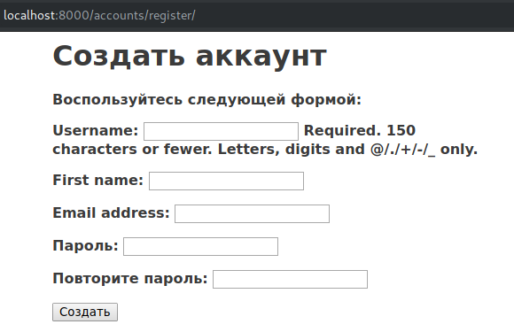
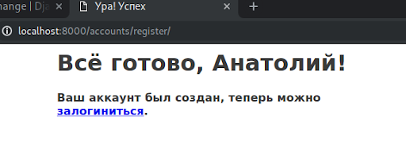
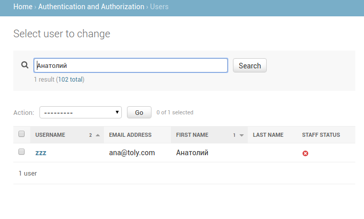

Сейчас у нас почти всё готово, чтобы регистрировать пользователей прямо в приложении.
Чтобы это сделать, нам понадобятся следующие компоненты:
Добавьте такую форму в accounts/forms.py:
from django.contrib.auth.models import User
# ...
class RegistrationForm(forms.ModelForm):
password = forms.CharField(label='Пароль', widget=forms.PasswordInput)
password2 = forms.CharField(
label='Повторите пароль', widget=forms.PasswordInput)
class Meta:
model = User
fields = ("username", "first_name", "email")
def clean_password2(self):
cd = self.cleaned_data
if cd["password"] != cd["password2"]:
raise forms.ValidationError("Пароли не совпадают")
return cd["password2"]
Отметим сразу несколько моментов:
Функции в формах, которые начинаются с clean_ ,обозначают правила, по которым то или иное поле попадает в словарь cleaned_data после валидации. В момент, когда мы дёргаем метод form.is_valid() из какого-нибудь нашего view, джанго смотрит, есть ли какие-то методы, которые называются подобным образом и вызывает их.
Ожидается что результат, к примеру, метода clean_SOMETHING попадёт в словарь cleaned_data с ключом SOMETHING. Внутри формы, при условии, что у нас не получилось совпасть паролями, мы поднимаем соответствующее исключение.
Вообще, конечно, мы здесь опять немного крафтово подходим, потому что в django.contrib.auth.forms есть класс формы для такого случая и он называется UserCreationForm. Он делает похожие вещи.
Теперь надо добавить разработчик, который будет отображать шаблон и валидировать форму. Для разнообразия сделаем его функцией. Допишите подобные строки в accounts/views.py:
def register(request):
if request.method == "POST":
form = RegistrationForm(request.POST)
if form.is_valid():
new_user = form.save(commit=False)
new_user.set_password(form.cleaned_data["password"])
new_user.save()
return render(request, "accounts/registration_complete.html",
{"new_user": new_user})
else:
form = RegistrationForm()
return render(request, "accounts/register.html", {"user_form": form})
Не забудьте в шапке документа импортировать форму.
Глобально здесь не происходит ничего нового, за исключением одного нюанса: джанга не хранит пароли в чистом виде, поэтому мы не можем просто взять и сказать user.password = 'qwerty' . Мы используем для этого метод set_password, который зашифрует пароль и сохранит его в базу для этого пользователя, когда мы вызовем new_user.save()
Как можно видеть из кода выше, нам нужно два шаблона для регистрации, один это accounts/register.html:
{% extends "base.html" %}
{% block title %}Зарегистрироватьсяt{% endblock %}
{% block main_content %}
<h1>Создать аккаунт</h1>
<p>Воспользуйтесь следующей формой:</p>
<form action="." method="post">
{{ user_form.as_p }}
{% csrf_token %}
<p><input type="submit" value="Создать"></p>
</form>
{% endblock %}
И один, который мы показываем после того, как успешно создали пользователя:
{% extends "base.html" %}
{% block title %}Ура! Успех{% endblock %}
{% block main_content %}
<h1>Всё готово, {{ new_user.first_name }}!</h1>
<p>Ваш аккаунт был создал, теперь можно
<a href="{% url "login" %}">залогиниться</a>.</p>
{% endblock %}
Мы используем пользователя, которого создали, чтобы сделать персонифицированное обращение. Заодно добавляем ссылку на регистрацию.
В accounts/urls.py мы регистрируем нашу функцию. Обратите внимание, что так как это уже функция, нам не надо вызывать каких-то as_view(). Некоторым такой подход кажется более "чистым":
path('register/', views.register, name='register'),
Убедимся, что все работает.
Проверим:
После регистрации:
Самого пользователя можно будет найти в админке:
Ещё один момент:
<a href="{% url "register" %}">зарегистрироваться</a>